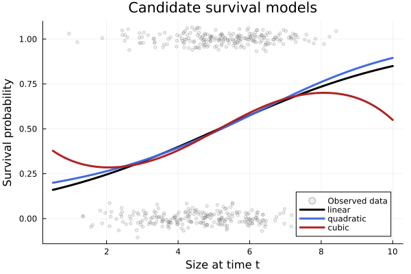
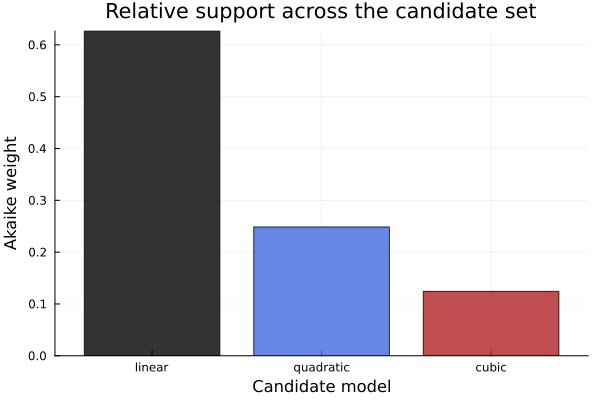

Overview
Vital-rate regressions are rarely known a priori. Following information-theoretic practice in demography, it is common to compare biologically plausible alternatives and select among them with AIC, $\Delta$AIC, and Akaike weights. VitalRateModels.jl provides modelsearch() for exactly this purpose.
Here we compare linear, quadratic, and cubic survival models for a size-structured perennial.
Setup
using VitalRateModels, DataFrames, StatsModels, Distributions, Plots
using Random
using Statistics
Random.seed!(2027)Random.TaskLocalRNG()Simulated survival data
We generate data from a slightly curved survival relationship so that the model-selection exercise has a meaningful signal.
n = 450
size_t = clamp.(rand(Normal(4.8, 1.5), n), 0.5, 10.0)
logit_survival = @. -3.0 + 1.0 * size_t - 0.09 * size_t^2 + 0.003 * size_t^3
survival_prob = @. 1 / (1 + exp(-logit_survival))
survived = rand.(Bernoulli.(survival_prob)) .== 1
data = DataFrame(size_t=size_t, survived=survived)
println("Observed survival = ", round(mean(data.survived), digits=3))Observed survival = 0.48Candidate models
The candidate set includes a linear trend, a quadratic curvature term, and a cubic polynomial. In real analyses these choices should come from biological expectations rather than arbitrary model fishing.
formulas = [
@formula(survived ~ size_t),
@formula(survived ~ size_t + size_t^2),
@formula(survived ~ size_t + size_t^2 + size_t^3),
]
comparison = modelsearch(SurvivalModel, data, formulas)
best_fit = best_model(comparison)FittedSurvival{StatsModels.TableRegressionModel{GLM.GeneralizedLinearModel{GLM.GlmResp{Vector{Float64}, Distributions.Bernoulli{Float64}, GLM.LogitLink}, GLM.DensePredChol{Float64, LinearAlgebra.CholeskyPivoted{Float64, Matrix{Float64}, Vector{Int64}}}}, Matrix{Float64}}}(StatsModels.TableRegressionModel{GLM.GeneralizedLinearModel{GLM.GlmResp{Vector{Float64}, Distributions.Bernoulli{Float64}, GLM.LogitLink}, GLM.DensePredChol{Float64, LinearAlgebra.CholeskyPivoted{Float64, Matrix{Float64}, Vector{Int64}}}}, Matrix{Float64}}(GLM.GeneralizedLinearModel{GLM.GlmResp{Vector{Float64}, Distributions.Bernoulli{Float64}, GLM.LogitLink}, GLM.DensePredChol{Float64, LinearAlgebra.CholeskyPivoted{Float64, Matrix{Float64}, Vector{Int64}}}}:
Coefficients:
────────────────────────────────────────────────────────────────
Coef. Std. Error z Pr(>|z|) Lower 95% Upper 95%
────────────────────────────────────────────────────────────────
x1 -1.83637 0.373853 -4.91 <1e-06 -2.56911 -1.10363
x2 0.356873 0.0730432 4.89 <1e-05 0.213711 0.500035
────────────────────────────────────────────────────────────────
, ModelFrame{@NamedTuple{survived::BitVector, size_t::Vector{Float64}}, GLM.GeneralizedLinearModel}(survived ~ 1 + size_t, StatsModels.Schema with 2 entries:
size_t => size_t
survived => survived
, (survived = Bool[1, 1, 1, 0, 0, 1, 0, 0, 0, 1 … 0, 0, 0, 1, 0, 1, 1, 0, 1, 0], size_t = [3.9666498678993913, 4.597820763233836, 6.171023721635704, 5.371114744880668, 3.5283376910657633, 4.595519254964297, 4.253800228519293, 1.3299225483360033, 4.370991320814892, 3.3134392588167763 … 4.213512402703919, 5.311659090541708, 5.227383323371408, 5.02323471041067, 4.334396707118237, 5.618698202959157, 7.096968544701627, 2.8661010722649665, 4.745745685883695, 3.0110632676210045]), GLM.GeneralizedLinearModel), ModelMatrix{Matrix{Float64}}([1.0 3.9666498678993913; 1.0 4.597820763233836; … ; 1.0 4.745745685883695; 1.0 3.0110632676210045], [1, 2])), survived ~ size_t, Binomial_(), 601.3450154631885, 450)AIC table
modelsearch() returns the fitted models, the original formulas, their AIC scores, the $\Delta$AIC values relative to the best model, and the corresponding Akaike weights.
labels = ["linear", "quadratic", "cubic"]
aic_table = DataFrame(
model = labels,
formula = string.(comparison.formulas),
AIC = round.(comparison.aic_values, digits=2),
delta_AIC = round.(comparison.delta_aic, digits=2),
akaike_weight = round.(comparison.weights, digits=3),
)
aic_table| Row | model | formula | AIC | delta_AIC | akaike_weight |
|---|---|---|---|---|---|
| String | String | Float64 | Float64 | Float64 | |
| 1 | linear | survived ~ size_t | 601.35 | 0.0 | 0.627 |
| 2 | quadratic | survived ~ size_t + :(size_t ^ 2) | 603.19 | 1.85 | 0.249 |
| 3 | cubic | survived ~ size_t + :(size_t ^ 2) + :(size_t ^ 3) | 604.58 | 3.24 | 0.124 |
println("Best model formula: ", comparison.formulas[comparison.best_idx])
println("Best model AIC: ", round(comparison.aic_values[comparison.best_idx], digits=2))Best model formula: survived ~ size_t
Best model AIC: 601.35Comparing fitted curves
To see what the ranking means biologically, we predict survival across the observed size range and overlay the candidate fits.
size_domain = collect(range(0.5, 10.0; length=200))
predictions = [predict_vital_rate(model, size_domain) for model in comparison.models]
colors = [:black, :royalblue, :firebrick]3-element Vector{Symbol}:
:black
:royalblue
:firebrickp = scatter(
data.size_t,
Float64.(data.survived) .+ rand(Normal(0, 0.03), n),
alpha=0.18,
ms=2.5,
color=:gray60,
label="Observed data",
xlabel="Size at time t",
ylabel="Survival probability",
title="Candidate survival models",
)
for i in eachindex(predictions)
plot!(p, size_domain, predictions[i], linewidth=3, color=colors[i], label=labels[i])
end
p
In this simulated example the quadratic or cubic model typically outperforms the linear fit because the true relationship bends upward for intermediate sizes and then saturates. When multiple models have similar support, the Akaike weights are often more informative than a single "winner".
Interpreting AIC weights
Akaike weights can be read as relative support for each candidate within the candidate set. They are especially helpful when the top two models have small $\Delta$AIC values.
p = bar(
labels,
comparison.weights,
xlabel="Candidate model",
ylabel="Akaike weight",
title="Relative support across the candidate set",
legend=false,
color=[:black, :royalblue, :firebrick],
alpha=0.8,
)
p
Summary
In this vignette we:
- built a biologically motivated candidate set of survival models,
- ranked those models with
modelsearch(), - inspected the AIC table, $\Delta$AIC values, and Akaike weights, and
- compared the fitted curves directly on the survival scale.
The same workflow applies to growth, fecundity, or recruitment models whenever several alternative formulas are scientifically plausible.
References
- Burnham, K. P., & Anderson, D. R. (2002). Model Selection and Multimodel Inference. Springer.
- Caswell, H. (2001). Matrix Population Models. Sinauer.
- Ellner, S. P., Childs, D. Z., & Rees, M. (2016). Data-Driven Modelling of Structured Populations. Springer.